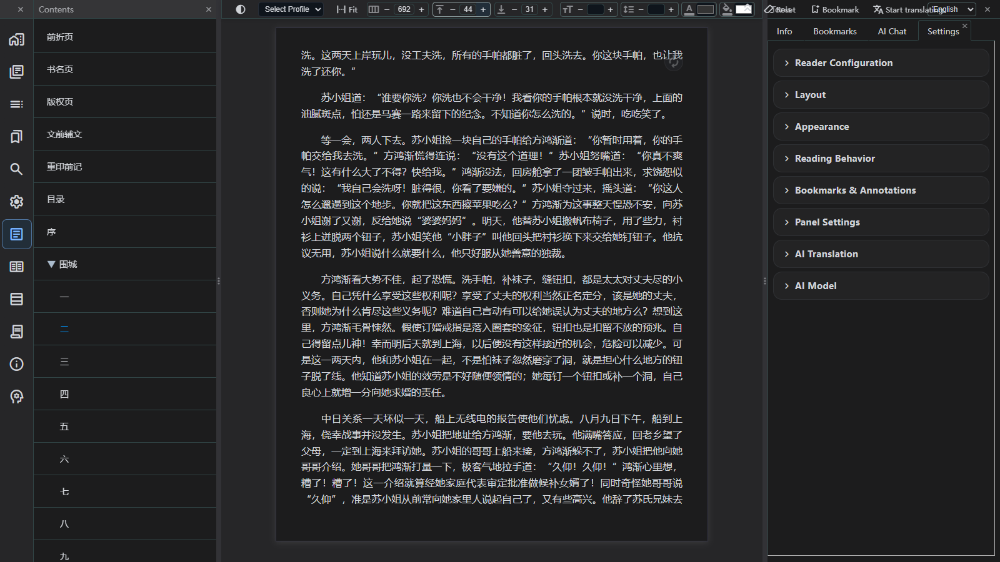
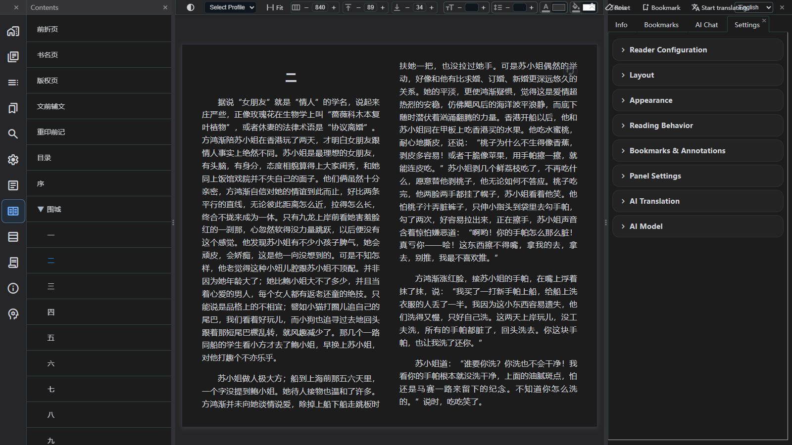
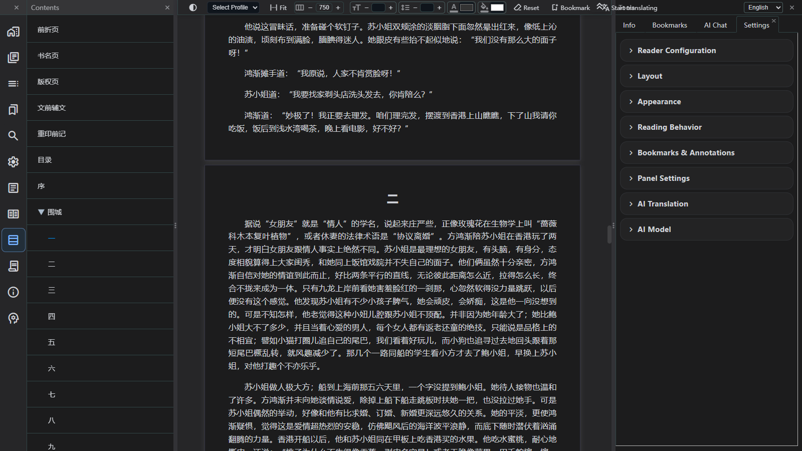
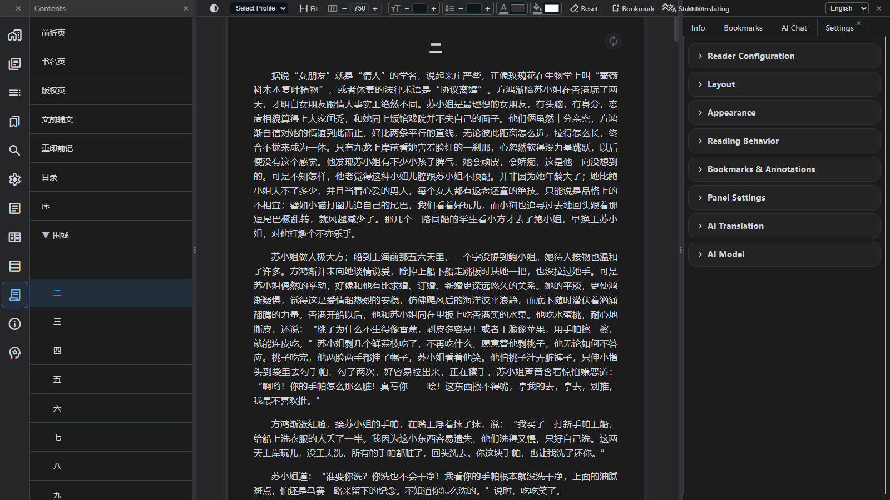

四种阅读模式
阅读器提供四种排版方式。它们只影响页面怎么排列，不影响书的内容。
四种模式
| 模式 | 显示方式 | 适合 |
|---|---|---|
| 全书连续模式 | 全书连续滚动，同时显示多个章节 | 长时间阅读、习惯上下滚动的读者 |
| 单章连续 | 每次只显示一个章节，章内滚动 | 想按章推进、又不想左右翻页 |
| 单页 | 一次显示一页，向左右翻页 | 接近纸书的翻页感 |
| 双页 | 一次并排显示两页 | 大屏幕，或想同时看到前后内容 |




怎么切换
- 打开任意一本书，进入阅读器。
- 在左侧工具栏点「单页模式」「双页模式」「连续模式」或「单章连续模式」。
- 阅读设置面板的「布局」分区里还有更细的选项，例如到章边界时是否自动换章。
切换模式后，阅读位置会尽量保持在原来的位置；分页模式与滚动模式之间换算时，可能落在相邻的一页。